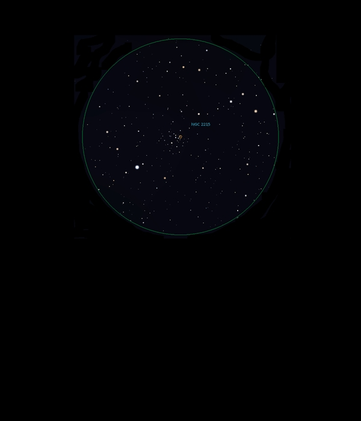

NGC 2215
Open
Cluster in Monoceros
NGC 2215
Mag 8.4
08/12/15
Very faint but attractive
Open Cluster of perhaps
twenty or so stars of Mags 10, 11 and 12
In 12mm the
only star of note is HIP 30086, a double star of Mag
7.9 but 7 Mon, HIP 30073 at Mag 5.25 is just out of
the FOV to the North